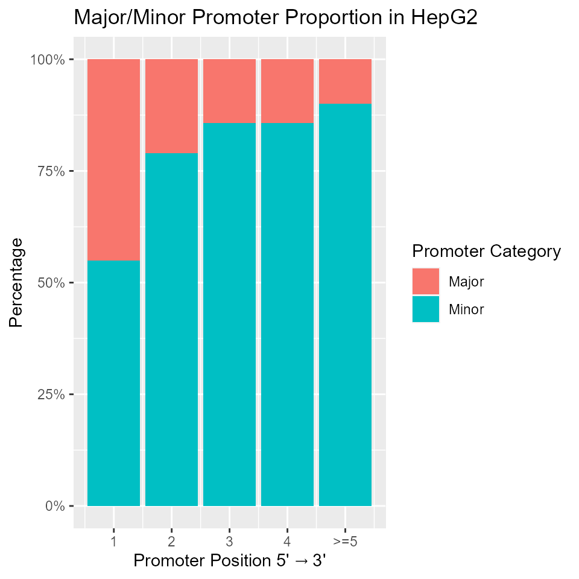
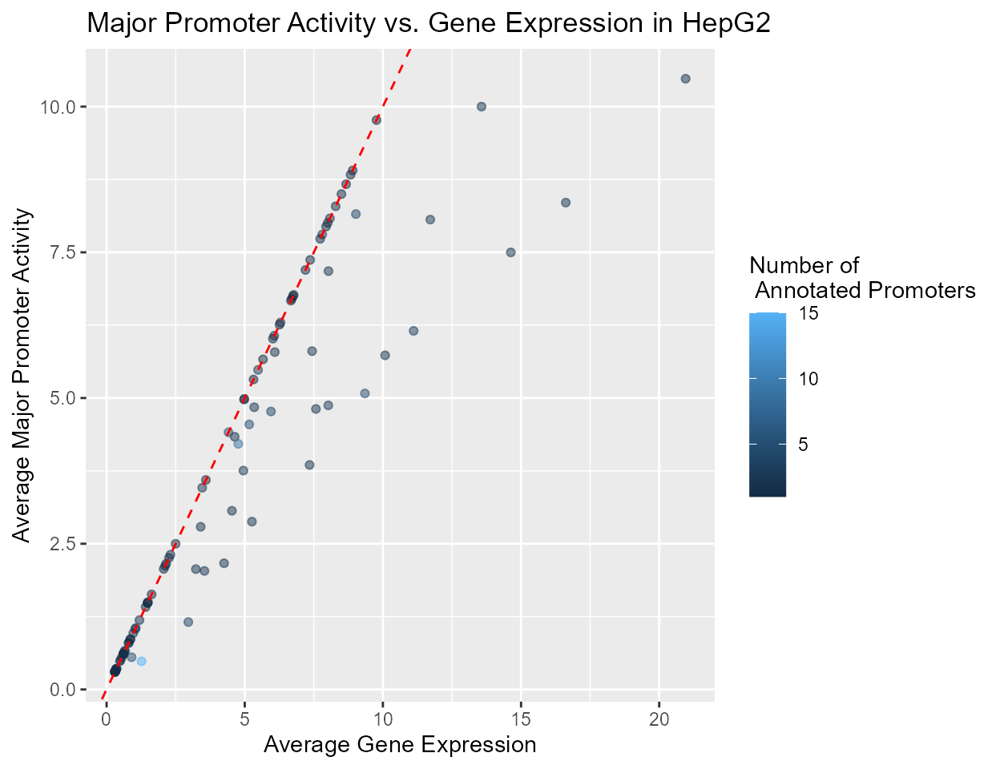

Identifying Active and Alternative Promoters from RNA-Seq data with proActiv
Joseph Lee, Deniz Demircioğlu, Jonathan Göke
Source:vignettes/proActiv.Rmd
proActiv.RmdSummary
Most human genes have multiple promoters that control the expression of distinct isoforms. The use of these alternative promoters enables the regulation of isoform expression pre-transcriptionally. Alternative promoters have been found to be important in a wide number of cell types and diseases.
proActiv is a method that enables the analysis of promoters from RNA-Seq data. proActiv uses aligned reads as input, and then generates counts and normalized promoter activity estimates for each annotated promoter. These estimates can then be used to identify which promoter is active, which promoter is inactive, and which promoters change their activity across conditions.
Here we present a quick start guide to using proActiv, and a detailed workflow for identifying active promoters and alternative promoters across 2 conditions.
If you use proActiv in your research, please cite:
Contents
Quick Start: Quantifying promoter activity with proActiv
proActiv estimates promoter activity from RNA-Seq data. Promoter activity is defined as the total amount of transcription initiated at each promoter. proActiv takes as input either BAM files or junction files (TopHat2 or STAR), and a promoter annotation object of the relevant genome. An optional argument condition can be supplied, describing the condition corresponding to each input file. Here we demonstrate proActiv with STAR junction files (Human genome GRCh38 Gencode v34) as input. Due to size constraints, analysis is restricted to a subset of chr1 (10,000,000-30,000,000).
library(proActiv)
## List of STAR junction files as input
files <- list.files(system.file('extdata/vignette/junctions',
package = 'proActiv'), full.names = TRUE)
## Vector describing experimental condition
condition <- rep(c('A549','HepG2'), each=3)
## Promoter annotation for human genome GENCODE v34 restricted to a subset of chr1
promoterAnnotation <- promoterAnnotation.gencode.v34.subset
result <- proActiv(files = files,
promoterAnnotation = promoterAnnotation,
condition = condition)result is a summarizedExperiment object which can be accessed as follows:
-
assays(results)returns raw/normalized promoter counts, absolute/relative promoter activity and gene expression -
rowData(results)returns promoter metadata and summarized absolute promoter activity and gene expression by conditions
A complete workflow to identify alternative promoter usage
Here we present a complete step-by-step workflow for analyzing promoter activity with proActiv and for identifying alternative promoter usage across samples from different conditions. We will compare samples from 2 different cell lines (A549 and HepG2) to identify alternative promoters.
Preparing input data
proActiv uses RNA-Seq data to quantify promoter activity. Users have the option of using as input either BAM files, or tab-delimited junction files that are generated when TopHat2 or STAR is used for read alignment.
Below, we demonstrate running proActiv with input STAR junction files. This data is taken from the SGNEx project, and restricted to the chr1:10,000,000-30,000,000 region. The reference genome used for alignment is Gencode v34 (GRCh38). These files can be found in extdata/vignette/junctions:
extdata/vignette/SGNEx_A549_Illumina_replicate1-run1.subset.SJ.out.tab.gzextdata/vignette/SGNEx_A549_Illumina_replicate3-run1.subset.SJ.out.tab.gzextdata/vignette/SGNEx_A549_Illumina_replicate5-run1.subset.SJ.out.tab.gzextdata/vignette/SGNEx_HepG2_Illumina_replicate2-run1.subset.SJ.out.tab.gzextdata/vignette/SGNEx_HepG2_Illumina_replicate4-run1.subset.SJ.out.tab.gzextdata/vignette/SGNEx_HepG2_Illumina_replicate5-run1.subset.SJ.out.tab.gz
files <- list.files(system.file('extdata/vignette/junctions',
package = 'proActiv'), full.names = TRUE)Preparing promoter annotations
In order to quantify promoter activity, proActiv uses a set of promoters based on genome annotations. proActiv allows the creation of a promoter annotation object for any genome from a TxDb object or from a GTF file with the preparePromoterAnnotation function. Users have the option to either pass the file path of the GTF/GFF or TxDb to be used, or use the TxDb object directly as input. proActiv includes pre-calculated promoter annotations for the human genome (GENCODE v34). However, due to size constraints, the annotation is restricted to the chr1:10,000,000-30,000,000 region. Users can build full annotations by downloading GTF files from GENCODE page and following the steps below.
We demonstrate creating the restricted promoter annotation for the Human genome (GENCODE v34) with both GTF and TxDb:
## From GTF file path
gtf.file <- system.file('extdata/vignette/annotation/gencode.v34.annotation.subset.gtf.gz',
package = 'proActiv')
promoterAnnotation.gencode.v34.subset <- preparePromoterAnnotation(file = gtf.file,
species = 'Homo_sapiens')
## From TxDb object
txdb.file <- system.file('extdata/vignette/annotation/gencode.v34.annotation.subset.sqlite',
package = 'proActiv')
txdb <- loadDb(txdb.file)
promoterAnnotation.gencode.v34.subset <- preparePromoterAnnotation(txdb = txdb,
species = 'Homo_sapiens')The PromoterAnnotation object has 3 slots:
-
intronRanges: Intron ranges, giving the corresponding transcripts of each intron -
promoterIdMapping: An ID mapping between transcripts, promoter IDs and gene IDs
-
promoterCoordinates: Promoter coordinates (TSS) and internal promoter state, along with the 3’ coordinate of the first exon
When creating promoter annotations for other species, one can call genomeStyles to identify the species argument to be used:
names(GenomeInfoDb::genomeStyles())
#> [1] "Arabidopsis_thaliana" "Caenorhabditis_elegans"
#> [3] "Canis_familiaris" "Cyanidioschyzon_merolae"
#> [5] "Drosophila_melanogaster" "Homo_sapiens"
#> [7] "Mus_musculus" "Oryza_sativa"
#> [9] "Populus_trichocarpa" "Rattus_norvegicus"
#> [11] "Saccharomyces_cerevisiae" "Zea_mays"Running proActiv
Once promoters in the genome are identified, proActiv estimates promoter activity at each annotated promoter. Here, we load pre-calculated promoter annotation for GENCODE Release 34. We also supply the experimental condition to proActiv. This information allows proActiv to summarize results across conditions.
promoterAnnotation <- promoterAnnotation.gencode.v34.subset
condition <- rep(c('A549', 'HepG2'), each=3)
result <- proActiv(files = files,
promoterAnnotation = promoterAnnotation,
condition = condition)result is a SummarizedExperiment object with assays as raw/normalized promoter counts, absolute/relative promoter activity and gene expression:
show(result)
#> class: SummarizedExperiment
#> dim: 1380 6
#> metadata(0):
#> assays(5): promoterCounts normalizedPromoterCounts
#> absolutePromoterActivity relativePromoterActivity geneExpression
#> rownames(1380): 1 2 ... 1379 1380
#> rowData names(14): promoterId geneId ... A549.class HepG2.class
#> colnames(6): SGNEx_A549_Illumina_replicate1.run1.subset.SJ.out
#> SGNEx_A549_Illumina_replicate3.run1.subset.SJ.out ...
#> SGNEx_HepG2_Illumina_replicate4.run1.subset.SJ.out
#> SGNEx_HepG2_Illumina_replicate5.run1.subset.SJ.out
#> colData names(2): sampleName conditionThe rowData slot stores a promoter-gene ID mapping and promoter position (5’ to 3’) for each promoter by gene. Mean absolute promoter activity and gene expression for each condition is also summarized here. Promoters are also categorized into three classes. Promoters with activity < 0.25 are classified as inactive, while the most active promoters of each gene are classified as major promoters. Promoters active at lower levels are classified as minor promoters.
| promoterId | geneId | seqnames | start | strand | internalPromoter | promoterPosition | txId | A549.mean | A549.gene.mean | HepG2.mean | HepG2.gene.mean | A549.class | HepG2.class |
|---|---|---|---|---|---|---|---|---|---|---|---|---|---|
| 1 | ENSG00000000938.13 | chr1 | 27624062 | - | TRUE | 4 | ENST0000…. | 0.000000 | 0.00000 | 0.000000 | 0.00000 | NA | NA |
| 2 | ENSG00000000938.13 | chr1 | 27626240 | - | FALSE | 3 | ENST0000…. | 0.000000 | 0.00000 | 0.000000 | 0.00000 | Inactive | Inactive |
| 3 | ENSG00000000938.13 | chr1 | 27626569 | - | FALSE | 2 | ENST0000…. | 0.000000 | 0.00000 | 0.000000 | 0.00000 | Inactive | Inactive |
| 4 | ENSG00000000938.13 | chr1 | 27635185 | - | FALSE | 1 | ENST0000…. | 0.000000 | 0.00000 | 0.000000 | 0.00000 | Inactive | Inactive |
| 5 | ENSG00000001460.18 | chr1 | 24379823 | - | TRUE | 7 | ENST0000…. | 4.721803 | 20.91493 | 4.319706 | 18.81489 | NA | NA |
| 6 | ENSG00000001460.18 | chr1 | 24391679 | - | TRUE | 6 | ENST0000…. | 4.207194 | 20.91493 | 3.999170 | 18.81489 | NA | NA |
For cleaner downstream analysis, one can remove single-exon transcripts for which promoter activity is not quantified. result can be filtered as such:
## Removes single-exon transcripts / promoters by eliminating promoter counts that are NA
result <- result[complete.cases(assays(result)$promoterCounts),]Identifying alternative promoters
To identify alternative promoter usage, proActiv implements a linear model, regressing both absolute promoter activity and relative promoter activity against sample conditions. A change in absolute promoter activity indicates absolute differential usage of the promoter. However, this does not imply alternative usage or a switch in major promoter, as the relative usage of promoters between conditions may still be the same. For this reason, information from relative promoter activity must also be taken into account. Alternative promoter usage is thus characterized by a significant change in absolute and relative promoter activity across conditions.
Candidates for alternative promoter usage can be identified by calling getAlternativePromoters. This function takes in the result object returned by proActiv, and referenceCondition, the reference condition to be compared to all other samples.
alternativePromoters <- getAlternativePromoters(result = result, referenceCondition = "A549")
#> Fitting absolute promoter activity to condition...
#> Fitting relative promoter activity to condition...
show(alternativePromoters)
#> $upReg
#> promoterId geneId
#> 137 137 ENSG00000076864.19
#> 138 138 ENSG00000076864.19
#> 314 314 ENSG00000117632.23
#>
#> $downReg
#> promoterId geneId
#> 141 141 ENSG00000076864.19Detection of alternative promoters with the following parameters:
-
minAbsMinimum value for promoter to be active in absolute terms. Defaults to 0.25.
-
minRelMinimum value for promoter to be active in relative terms. Defaults to 0.05.
-
maxPvalAdjusted p-value threshold for detecting alternative promoters. Defaults to 0.05.
-
promoterFCMinimum fold change for a promoter in the current condition compared to all other conditions. Promoters must have at least this magnitude of fold change for alternative usage. This parameter can be decreased to relax alternative usage definition. Defaults to 2.0.
-
geneFCMaximum fold change for gene expression. To identify alternative promoter usage independent of changes in gene expression, limit the gene expression fold change. Promoters must have at most this magnitude of gene expression fold change for alternative usage. This parameter can be increased to relax alternative usage definition. Defaults to 1.5.
Analysis and visualization of alternative promoter usage
Here we offer several visualizations of the data returned by the workflow above.
Alternative Promoter Usage
To visualize genes with alternative promoter usage across conditions, we call plotPromoters on the summarizedExperiment object result returned by proActiv. Here, we demonstrate plotPromoters by visualizing promoters of RAP1GAP (ENSG00000076864.19). RAP1GAP is the most significant gene identified in dxr1 as a candidate for alternative promoter usage across cell lines A549 and HepG2. plotPromoters takes in result and gene, a gene of interest.
In order to build and plot a transcript model for the gene of interest, users may supply either a transcript database (txdb) or a list of Genomic Ranges giving the ranges of exons by transcripts to be plotted (ranges). If users choose to use a TxDb as input, we recommend that the TxDb used should be the same as the one used to prepare promoter annotations, as annotations from different sources may differ slightly. To keep the run-time of this vignette short, we use a TxDb generated from GENCODE v34 GTF subsetted to RAP1GAP.
## RAP1GAP
gene <- 'ENSG00000076864.19'
txdb <- loadDb(system.file('extdata/vignette/annotations',
'gencode.v34.annotation.rap1gap.sqlite',
package = 'proActiv'))
plotPromoters(result = result, gene = gene, txdb = txdb)
The same plot can be generated with a list of Genomic Ranges giving the exons by transcripts of RAP1GAP:
ranges <- readRDS(system.file('extdata/vignette/annotations',
'exonsBy.rap1gap.rds',
package = 'proActiv'))
plotPromoters(result = result, gene = gene, ranges = ranges)Users can adjust the width of the promoter ‘blocks’ and ‘arrows’ in the plot with the numeric arguments blk.width and arrow.width respectively. blk.width defaults to 500 (bases), while arrow.width is internally calculated based on the range of the gene. Other parameters controlling the fill and border colour and size of labels are listed in code documentation.
Alternatively, promoter activity can be visualized with boxplotPromoters. This function outputs boxplots of gene expression, absolute and relative promoter activity for a gene of interest. boxplotPromoters takes the following arguments:
-
result. ThesummarizedExperimentobject returned by proActiv. This must contain a condition vector (i.e., the call toproActivthat returned thisresultmust have had theconditionvector supplied).
-
geneId. A character vector of the gene of interest. This identifier must correspond to the identifier in the promoter annotation.
-
geneName. A character vector of the gene of interest. The common gene name to be plotted. Optional and defaults to NULL.
-
filterInternal. A boolean variable that determines if internal promoters should be removed from the plot. Defaults to TRUE.
-
col. A character vector of colours for plotting. Defaults to NULL, which usesggplot2default colours.
Below, we call boxplotPromoters with RAP1GAP:
plots <- boxplotPromoters(result, "ENSG00000076864.19")
# Boxplot of absolute promoter activity
library(gridExtra)
grid.arrange(plots[[1]], plots[[3]], nrow = 1, ncol = 2, widths = c(3, 2))The plots object stores the plot for absolute promoter activity, relative promoter activity and gene expression in the first, second and third slot respectively. Both plots generated by plotPromoters and boxplotPromoters reflect the alternative usage of promoters 137 and 141 as called by getAlternativePromoters.
Promoter category proportion
Here, we visualize the categorization of annotated promoters in the two cell lines. The proportions between the categories are similar across the two cell lines, with majority of the promoters being inactive.
library(ggplot2)
rdata <- rowData(result)
## Create a long dataframe summarizing cell line and promoter class
pdata1 <- data.frame(cellLine = rep(c('A549', 'HepG2'), each = nrow(rdata)),
promoterClass = as.factor(c(rdata$A549.class, rdata$HepG2.class)))
ggplot(na.omit(pdata1)) +
geom_bar(aes(x = cellLine, fill = promoterClass)) +
xlab('Cell Lines') + ylab('Count') + labs(fill = 'Promoter Category') +
ggtitle('Categorization of Promoters')
Major/minor promoters by position
Analysis of major:minor promoter proportions against promoter position. The analysis is restricted to multi-promoter genes with at least one active promoter. Below, we generate the plot for cell line HepG2. In general, the major:minor promoter proportion decreases with increasing promoter position.
## Because many genes have many annotated promoters, we collapse promoters
## from the 5th position and onward into one group for simplicity
pdata2 <- as_tibble(rdata) %>%
mutate(promoterPosition = ifelse(promoterPosition > 5, 5, promoterPosition)) %>%
filter(HepG2.class %in% c('Major', 'Minor'))
ggplot(pdata2) +
geom_bar(aes(x = promoterPosition, fill = as.factor(HepG2.class)), position = 'fill') +
xlab(expression(Promoter ~ Position ~ "5'" %->% "3'")) + ylab('Percentage') +
labs(fill = 'Promoter Category') + ggtitle('Major/Minor Promoter Proportion in HepG2') +
scale_y_continuous(breaks = seq(0,1, 0.25), labels = paste0(seq(0,100,25),'%')) +
scale_x_continuous(breaks = seq(1,5), labels = c('1','2','3','4','>=5'))
Major promoter activity and gene expression
Comparison of major promoter activity and gene expression, calculated by summing over all promoters. Single promoter genes lie on the diagonal. Multi-promoter genes lie to the right of the diagonal. Below, we generate the plot for cell line HepG2. This plot suggests that a single major promoter does not often fully explain gene expression, with minor promoters also contributing to gene expression.
## Get active major promoters of HepG2
majorPromoter <- as_tibble(rdata) %>% group_by(geneId) %>%
mutate(promoterCount = n()) %>% filter(HepG2.class == 'Major')
pdata3 <- data.frame(proActiv = majorPromoter$HepG2.mean,
geneExp = majorPromoter$HepG2.gene.mean,
promoterCount = majorPromoter$promoterCount)
ggplot(pdata3, aes(x = geneExp, y = proActiv)) +
geom_point(aes(colour = promoterCount), alpha = 0.5) +
ggtitle('Major Promoter Activity vs. Gene Expression in HepG2') +
xlab('Average Gene Expression') + ylab('Average Major Promoter Activity') +
labs(colour = 'Number of \n Annotated Promoters') +
geom_abline(slope = 1, intercept = 0, colour = 'red', linetype = 'dashed')
t-SNE
We generate a t-SNE plot with all active promoters. Expectedly, replicates from each cell line cluster together.
library(Rtsne)
## Remove inactive promoters (sparse rows)
data <- assays(result)$absolutePromoterActivity %>% filter(rowSums(.) > 0)
data <- data.frame(t(data))
data$Sample <- as.factor(condition)
set.seed(40) # for reproducibility
tsne.out <- Rtsne(as.matrix(subset(data, select = -c(Sample))), perplexity = 1)
plot(x = tsne.out$Y[,1], y = tsne.out$Y[,2], bg = data$Sample, asp = 1,
col = 'black', pch = 24, cex = 4,
main = 't-SNE plot with promoters \n active in at least one sample',
xlab = 'T-SNE1', ylab = 'T-SNE2',
xlim = c(-300,300), ylim = c(-300,300))
legend('topright', inset = .02, title = 'Cell Lines',
unique(condition), pch = c(24,24), pt.bg = 1:length(unique(condition)) , cex = 1.5, bty = 'n')
Getting help
Questions and issues can be raised at the Bioconductor support site: https://support.bioconductor.org. Ensure your posts are tagged with proActiv.
Alternatively, issues can be raised at the proActiv Github repository: https://github.com/GoekeLab/proActiv.
Session information
#> R version 4.0.3 (2020-10-10)
#> Platform: x86_64-w64-mingw32/x64 (64-bit)
#> Running under: Windows 10 x64 (build 19041)
#>
#> Matrix products: default
#>
#> locale:
#> [1] LC_COLLATE=English_Singapore.1252 LC_CTYPE=English_Singapore.1252
#> [3] LC_MONETARY=English_Singapore.1252 LC_NUMERIC=C
#> [5] LC_TIME=English_Singapore.1252
#>
#> attached base packages:
#> [1] stats4 parallel stats graphics grDevices utils datasets
#> [8] methods base
#>
#> other attached packages:
#> [1] Rtsne_0.15 ggplot2_3.3.3 gridExtra_2.3
#> [4] GenomicFeatures_1.42.1 AnnotationDbi_1.52.0 Biobase_2.50.0
#> [7] GenomicRanges_1.42.0 GenomeInfoDb_1.26.2 IRanges_2.24.1
#> [10] S4Vectors_0.28.1 BiocGenerics_0.36.0 proActiv_1.1.18
#>
#> loaded via a namespace (and not attached):
#> [1] colorspace_2.0-0 ellipsis_0.3.1
#> [3] rprojroot_2.0.2 biovizBase_1.38.0
#> [5] htmlTable_2.1.0 XVector_0.30.0
#> [7] base64enc_0.1-3 fs_1.5.0
#> [9] dichromat_2.0-0 rstudioapi_0.13
#> [11] farver_2.0.3 bit64_4.0.5
#> [13] xml2_1.3.2 splines_4.0.3
#> [15] geneplotter_1.68.0 knitr_1.30
#> [17] Formula_1.2-4 Rsamtools_2.6.0
#> [19] annotate_1.68.0 cluster_2.1.0
#> [21] dbplyr_2.0.0 png_0.1-7
#> [23] compiler_4.0.3 httr_1.4.2
#> [25] backports_1.2.1 lazyeval_0.2.2
#> [27] assertthat_0.2.1 Matrix_1.2-18
#> [29] htmltools_0.5.0 prettyunits_1.1.1
#> [31] tools_4.0.3 gtable_0.3.0
#> [33] glue_1.4.2 GenomeInfoDbData_1.2.4
#> [35] dplyr_1.0.2 rappdirs_0.3.1
#> [37] Rcpp_1.0.5 pkgdown_1.6.1
#> [39] vctrs_0.3.6 Biostrings_2.58.0
#> [41] rtracklayer_1.49.5 xfun_0.19
#> [43] stringr_1.4.0 lifecycle_0.2.0
#> [45] ensembldb_2.14.0 XML_3.99-0.5
#> [47] zlibbioc_1.36.0 scales_1.1.1
#> [49] BSgenome_1.58.0 VariantAnnotation_1.36.0
#> [51] ProtGenerics_1.22.0 ragg_0.4.0
#> [53] hms_0.5.3 MatrixGenerics_1.2.0
#> [55] SummarizedExperiment_1.20.0 AnnotationFilter_1.14.0
#> [57] RColorBrewer_1.1-2 yaml_2.2.1
#> [59] curl_4.3 memoise_1.1.0
#> [61] biomaRt_2.46.0 rpart_4.1-15
#> [63] latticeExtra_0.6-29 stringi_1.5.3
#> [65] RSQLite_2.2.1 highr_0.8
#> [67] genefilter_1.72.0 desc_1.2.0
#> [69] checkmate_2.0.0 BiocParallel_1.24.1
#> [71] rlang_0.4.9 pkgconfig_2.0.3
#> [73] systemfonts_0.3.2 matrixStats_0.57.0
#> [75] bitops_1.0-6 evaluate_0.14
#> [77] lattice_0.20-41 purrr_0.3.4
#> [79] labeling_0.4.2 htmlwidgets_1.5.3
#> [81] GenomicAlignments_1.26.0 bit_4.0.4
#> [83] tidyselect_1.1.0 magrittr_2.0.1
#> [85] DESeq2_1.30.0 R6_2.5.0
#> [87] generics_0.1.0 Hmisc_4.4-2
#> [89] DelayedArray_0.16.0 DBI_1.1.0
#> [91] withr_2.3.0 pillar_1.4.7
#> [93] foreign_0.8-80 survival_3.2-7
#> [95] RCurl_1.98-1.2 nnet_7.3-14
#> [97] tibble_3.0.4 crayon_1.3.4
#> [99] BiocFileCache_1.14.0 rmarkdown_2.6
#> [101] jpeg_0.1-8.1 progress_1.2.2
#> [103] locfit_1.5-9.4 grid_4.0.3
#> [105] data.table_1.13.6 blob_1.2.1
#> [107] digest_0.6.27 xtable_1.8-4
#> [109] textshaping_0.2.1 openssl_1.4.3
#> [111] munsell_0.5.0 Gviz_1.34.0
#> [113] askpass_1.1